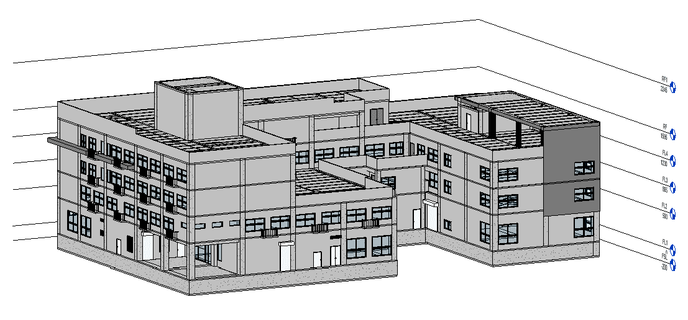
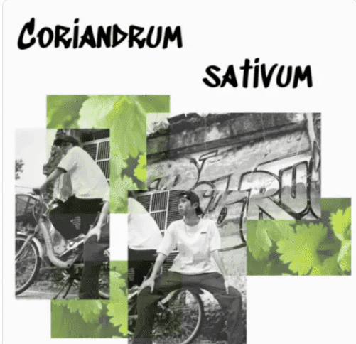

個人資訊
中原大學 建築系大三
生日：92/05/25 雙子座
個性：樂觀、開朗、喜愛嘗試新事物
興趣：唱歌、追星
優點：每天開開心心、不會排斥新事物
缺點：容易拖延、三分鐘熱度
最愛的歌手：周杰倫、Gfriend、林俊傑
SLOGAN
及時行樂、活在當下
個人專業與技能
建築製圖、建模軟體
AutoCAD
SketchUp
Revit
地理資訊應用系統
ArcGIS
繪圖軟體
Photoshop
參數化設計軟體
Rhino Grasshopper
編曲軟體
Cubase
個人經歷
活動參與
建築小姐
工作人員&表演者
彰化縣暑期樂學列車
伸東國小老師
中原大學母親節合唱比賽
建築系
3Q青少年領袖成長營
公關組員&副隊輔
簡報力工作坊 生活組員
生命靈數工作坊
招生長&隊輔長

幹部經歷
青年領袖研習社 社長
青年領袖研習社 課程組長
參賽經歷
厝克松-未來之都
競圖
其他
建築設計作品
陳 家 住宅設計
數位製造工作室
小型公寓住宅設計
編曲作品
建模作品
空軍基地宿舍K001
小型專輯企劃作品：芫荽
Podcast頻道：森活記錄在森處
點圖收聽